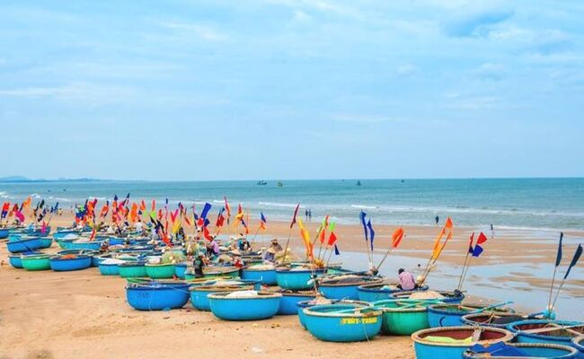
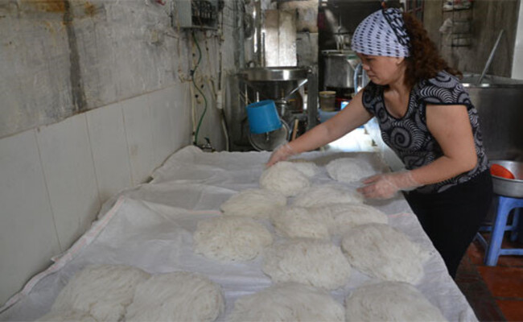
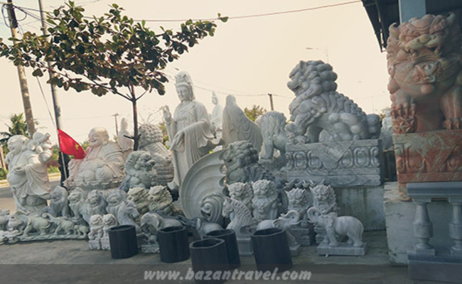
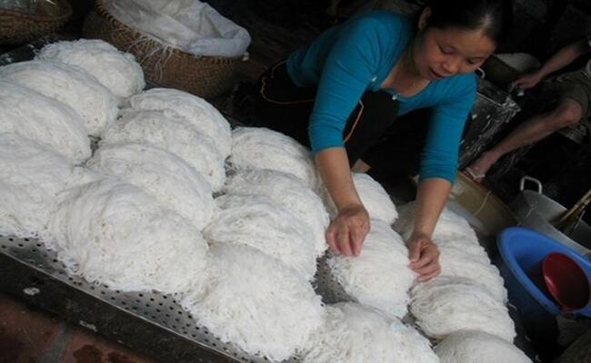
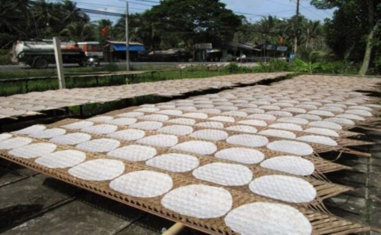
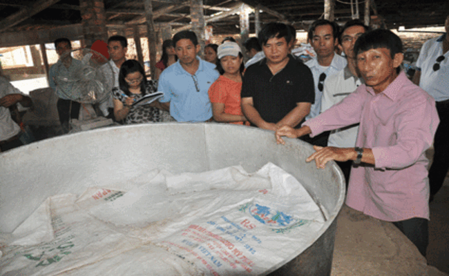

1 Làng cá Phước Hải
- Làng cá Phước Hải nổi tiếng với ngành nghề chính là đánh bắt, chế biến và kinh doanh các loại hải sản
tươi sống. Khi bạn đến đây có thể tận mắt chứng kiến các thuyền cá cập bến với những con cá tươi mới
đánh bắt về. Ngoài ra, bạn cũng có thể tham gia trực tiếp vào các hoạt động đánh bắt cá như mồi câu, thả
lưới, kéo dù…
- Hơn nữa, khi đến với làng cá Phước Hải, bạn cũng có cơ hội tham quan các nhà máy chế biến hải sản
và thưởng thức các món ăn được làm từ hải sản tươi ngon như: hàu nướng mỡ hành, sò điệp nướng mỡ hành,
tôm hùm nướng muối ớt…

- Không chỉ là nơi sản xuất hải sản, làng cá Phước Hải còn được biết đến với cảnh quan thiên nhiên đẹp,
bờ biển trải dài, nơi bạn có thể thả mình vào bãi biển vắng người để tận hưởng không khí trong lành và
cảm giác thư giãn sau những ngày làm việc căng thẳng.
Địa chỉ: thị trấn Phước Hải, huyện Đất Đỏ, tỉnh Bà Rịa – Vũng Tàu
2 Làng nghề đúc đồng ở Long Điền
- Làng nghề đúc đồng Long Điền có lịch sử phát triển hơn 200 năm và được biết đến với những sản phẩm đúc
đồng đẹp mắt, tinh xảo và chất lượng cao như bình đựng nước, lọ hoa, đĩa trang trí, tượng phật và các đồ
vật phong thủy.
- Khi đến thăm Làng nghề đúc đồng Long Điền, bạn sẽ được tận mắt chứng kiến quá trình đúc đồng thủ
công truyền thống của người làng, từ khâu chuẩn bị khuôn đúc, đổ đồng, xử lý sản phẩm đúc đồng đến các
bước hoàn thiện cuối cùng.

- Ngoài ra, bạn còn có thể tìm hiểu thêm về lịch sử, văn hóa và phong tục tập quán địa phương thông qua
các món ăn truyền thống và các sản phẩm thủ công mỹ nghệ độc đáo khác như tranh đồng, chổi đồng, bình
đựng rượu…
- Với không khí trong lành, yên tĩnh và sự chân thật của người dân địa phương, Làng nghề đúc đồng Long
Điền chắc chắn sẽ mang đến cho bạn những trải nghiệm độc đáo và khó quên trong chuyến du lịch Vũng Tàu.
Địa chỉ: trục lộ 55, con đường huyết mạch nối Bà Rịa với thành phố Hồ Chí Minh
3 Làng nghề làm đá ở Tân Thành
- Làng nghề làm đá ở Tân Thành tự hào với những nghệ nhân lành nghề, tài hoa và nhiệt tình. Họ đã thực
hiện nhiều công trình nổi tiếng với đá như Tượng đài Thống Nhất ở Sài Gòn, các bức tượng đá ở đền Hùng,
Bà Chúa Xứ, chùa Bái Đính… Những sản phẩm đá được tạo ra ở đây đều mang một giá trị nghệ thuật cao, được
chế tác với tình yêu và sự tâm huyết của các nghệ nhân.
- Không chỉ đơn thuần là một nơi sản xuất đá, Làng nghề làm đá ở Tân Thành còn là một điểm đến thú
vị cho bạn yêu thích văn hóa và lịch sử. Tại đây, bạn có thể tìm hiểu về lịch sử và truyền thống của
nghề làm đá, đồng thời còn được trải nghiệm những hoạt động vui chơi giải trí như đi thuyền, câu cá,
thăm quan những danh thắng nổi tiếng gần đó như Vườn Quốc gia Côn Đảo hay Bãi Dài – một trong những bãi
biển đẹp nhất của Việt Nam.

- Với những giá trị văn hóa, lịch sử và du lịch đa dạng, Làng nghề làm đá ở Tân Thành là một điểm đến
hấp dẫn và không thể bỏ qua khi bạn đến thăm Vũng Tàu.
Địa chỉ: dọc theo quốc lộ 51 và sông Thị Vải, cách thành phố Hồ Chí Minh 65 km, thuộc địa bàn 2 xã Tân
Phước và Phước Hòa, huyện Tân Thành, tỉnh BR-VT
4 Làng bún Long Kiên
- Làng bún Long Kiên là một điểm đến nổi tiếng của thành phố Vũng Tàu, nằm tại xã Long Điền Đông, huyện
Đất Đỏ. Làng nổi tiếng với nghề làm bún đặc sản, là một điểm đến hấp dẫn cho các thực khách yêu thích ẩm
thực.
- Bún là một loại mì truyền thống của Việt Nam được làm từ bột gạo, đặc biệt là ở Vũng Tàu, bún
được làm thủ công và tỉ mỉ hơn bằng phương pháp truyền thống. Ở Làng bún Long Kiên, các nhà làm bún đã
bảo tồn và phát triển nghề truyền thống này đến ngày nay.

- Du khách khi đến Làng bún Long Kiên có thể tham quan và trải nghiệm quy trình sản xuất bún thủ công
truyền thống, từ việc trộn bột, nhào, lăn và sơ chế bún. Không chỉ tham quan, du khách còn có thể thử ăn
bún tươi ngon và hương vị đậm đà của đặc sản này.
- Ngoài ra, Làng bún Long Kiên còn là một điểm đến thú vị để tìm hiểu về văn hóa, truyền thống và phong
cách sống của người dân nơi đây. Du khách có thể tương tác và trò chuyện với người dân địa phương để
hiểu rõ hơn về nghề làm bún và cuộc sống của họ.
5 Làng bánh tráng An Ngãi
- Bánh tráng An Ngãi đã quá quen thuộc với người dân Bà Rịa - Vũng Tàu. Đây cũng là làng nghề đầu tiên
của tỉnh được công nhận là “Làng nghề truyền thống”.
- Với sản phẩm đặc trưng là bánh tráng nem truyền thống, hiện nay nghề truyền thống bánh tráng của xã An
Ngãi đã từng bước nâng cao chất lượng bánh tráng có nhiều loại như bánh tráng nem, bánh tráng nem cỡ
lớn, bánh tráng ớt,... dùng để ăn trực tiếp, ăn kèm hay làm nguyên liệu chế biến các món ăn thường ngày.

- Năm 2013, nghề làm bánh trang tại xã An Ngãi được UBND tỉnh Bà Rịa – Vũng Tàu công nhận là nghề truyền
thống. Từ đó đến nay, địa phương đã không ngừng nâng cao chất lượng, đa dạng về sản phẩm và ổn định thị
trường. Hiện nay, toàn xã có 128 hộ làm bánh tráng, chiếm gần 60% tổng số hoạt động ngành nghề nông thôn
trên địa bàn xã.
- Những năm qua, xã An Ngãi đã tích cực thực hiện việc ứng dụng khoa học công nghệ đối với nghề làm bánh
tráng. Trong đó, thực hiện Dự án “phát triển làng nghề truyền thống bánh tráng An Ngãi” đã tạo điều kiện
người làm nghề bánh tráng tại xã tiếp cận với công nghệ cơ giới hóa, máy móc và trang thiết bị hỗ trợ
làm nghề (như máy xay bột, lò tráng điện).
6 Làng nấu rượu Hòa Long
- Nghề nấu rượu tại xã Hòa Long, thành phố Bà Rịa, tỉnh Bà Rịa – Vũng Tàu có từ những năm 60 của thế kỷ
trước, ban đầu chỉ vài hộ, lâu dần được phát triển, lưu giữ qua nhiều thế hệ với những bí quyết rất
riêng, và dần trở thành nghề đặc trưng của xã, tạo nên nét văn hóa riêng ở Hòa Long.
- Rượu đế Hòa Long có vị nồng rất đặc trưng mà người thưởng thức hay nhận xét là “uống đến đâu biết đến
đó”. Theo những người dân sống lâu năm tại mảnh đất này, rượu Hòa Long thơm ngon vì ngoài nguyên liệu
tốt, người dân Hòa Long còn có bí quyết trong cách chọn nguyên liệu, làm men, ủ cơm, chưng cất, hệ thống
lọc tạp chất… Đặc biệt là chất lượng nước, phong thổ và bí quyết thực hiện các công đoạn khi thời tiết
thay đổi... Hiện nay, xã Hòa Long có khoảng 70 hộ dân nấu rượu, có những hộ mỗi ngày nấu khoảng 500-600
lít.

- Cuối tháng 8/2016, nghề nấu rượu Hòa Long được UBND tỉnh cấp bằng công nhận là nghề truyền thống.
Ngoài việc được công nhận làng nghề truyền thống, năm 2017, Hợp tác xã Hòa Thành đã được Cục sở hữu trí
tuệ cấp chứng nhận đăng ký độc quyền nhãn hiệu rượu Hòa Long.
- Đến với làng nấu rượu Hòa Long du khách chắc chắn sẽ có một trải nghiệm tuyệt vời với những vị khách
yêu thích tìm hiểu về những giá trị truyền thống.